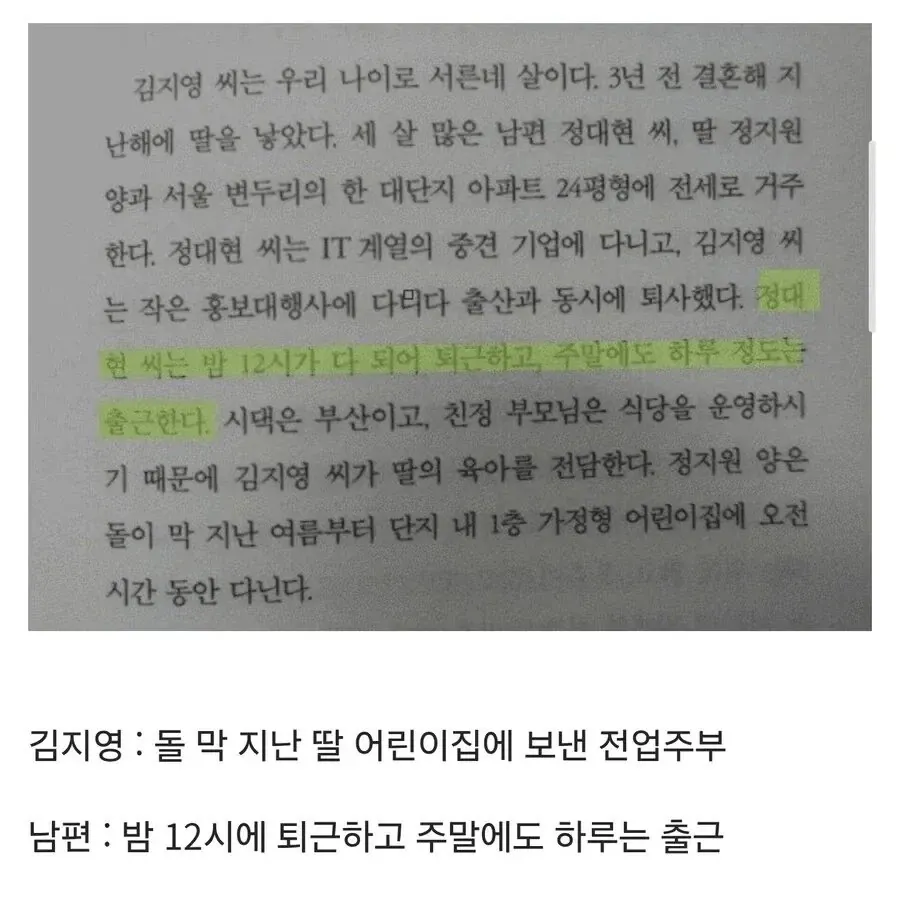

79년생 정대현

79년생 정대현
양심 걸고 진짜 읽어봄?
그럴리가 있나...
난 읽어봤는데 생각보다 나이브함
중간에 갑자기 뜬금없이 통계 나오는 황당한 장면도 있지만 여기서 남편묘사처럼 남편을 악당으로 묘사하지는 않음
오히려 그게 일반적인 여성들이 자연스럽게 당하는 차별을 묘사하는 방식으로 느껴짐
상담으로 진행되는 소설인데 마지막 장면은 그래도 괜찮았음
까고 싶으면 그래도 빌려서라도 읽어보는 거 추천함
나도 봤음. 그냥 그러려니 할 정도의 소설인데 안 보고 욕하고 싶은 애들만 맹목적으로 욕 하더라고. 그래서 물어본 거. 봤으면 첫댓 같은 댓글 안 달테니까..
소설 자체의 문제라기 보단 사회적 현상과 맞물려서 특정 집단에서 올려치고 화제가 되니까 반발심리도 함께 커지는 문제라고 봄.
22 읽어보면 걍 평범한 풍자소설 정도임
바이블이 돼서 논란인거지 책 자체는 진짜 별 거 없음
아니 통계 부분이 소설의 하이라이트 뒷받침 부분인데 거기서 그걸 왜 빼
걍 작중의 김지영 이야기가 가상의 허구의 얘기나 작가 자전적인 얘기가 아니라 보편적인 대한민국 여성의 이야기라고 말하는 내용이고, 그에대한 근거로 갖고온게 작중의 통계 인데 (통계청피셜 오류 있임)
그리고 작중의 남편의 직접적으로 가해자로 묘사하지 않았을 뿐 기타 할아버지에서부터 지나가던 이대남까지 죄다 주인공 김지영을 공격하는 혐오세력으로 그려짐.
심지어는 남편이라도 긍정적으로 그려지냐? 하면 절대로 아닌데, 직접적인 가해자는 아니지만 그렇다고 절대 김지영의 이해자가 아닌 수동적이고 이차적인 가해자로 그려짐.
말하자면 일제강점기 당시 착한 일본인이랄까? 직접적으로 조선인에게 피해를 안 끼치더라도, 일제강점기라는 사회구조관계 속에서 친구가 될수 없고 갑을 관계가 형성됨. 심지어는 일본인으로써 정부에 세금 내는 것만으로도 조선인 억압에 소극적으로라도 가담하는 구조적 가해자.
원작기준으로는 착한 남자? 라던 김지영 남편조차 아무리 부인인 김지영이 아파해도 넌 기득권층인 남자니까 피해자인 여성의 아픔을 공감 못해 ㅅㄱ 가 결론임
착한 남자던 나쁜 남자던 영프티던 어린아이(=한남유쭝) 이던 지금 이 사회는 가부장제 사회고 남자란 존재는 남자인것만으로 정도의 차이만 있을뿐 여자를 억압하는 가해자 라는 말이지
내용 자체는 님 말이 맞음
일단 책을 일개 커뮤 혐글과 똑같은 선상으로 보는게 적절하진 않음. 단순 분량을 늘어뜨린 여시발 커뮤글 쯤으로 보면 더 할 말이 없어짐
풍자소설에 대한 장르적 이해도가 있다면 저 책 자체가 "위험한 책" 으로 바라볼 수 있을지에 대해선 난 개소리라고 생각함. 저걸 통계로 들이밀거나 신봉하는 세력들이 병신인거지 어디까지나 책 자체를 따로 생각했을땐 난 저것보다 훨씬 강한 표현의 풍자 섞인 책들 훨씬 많다고 봄. 여타의 소설들만 봐도 여성의 성을 정말 잔인하게 묘사하는 책들 널렸음. 진짜 쉽게 다룸. 난 페미 아님. 여성징병 해야 할 때가 옴ㅇㅇ
픽션인 점을 꼬집는 사람들도 있는데 책은 고사하고 교과서는 읽어본 건가?.. 싶음
ㄹㅇ 그게 핵심인데.그걸 왜 빼거 생각보다 괜찮다함 ㅋㅋㅋ
황당한 장면은 왜 뺌?ㅋ
진중문고 선정되면서 읽어본사람 되게 많어 저책...
나더 읽어봄
ㅇㄱㄸ
왜 ㅇㄱㄸ?
ㅋㅋ 캐치캐치
의도가 보인다는 겁니까?
문제...뭐요?
여기 스윗페미들임?
얼굴도 모르는 남의 집 아줌마에는 '공감'하고 지들 애비 뒤지게 고생하는 것은 무관심한 그짝식 선택적 감정이입
어머니도 읽으시더니 불쌍하게만 그려놨다고 별로라고 도중에 덮으시더라
시택은 부산이고, 친정 부모님은 식당을 운영하시기 때문에 김지영 씨가 딸의 육아를 전담한다. 이 문장도 참 이상함
그렇네
전업주부인데 시댁과 친정이 무슨 상관임
애시당초 자기 딸인데
심지어 오전에는 어린이집 보내고
때문에가 와서도 안되고 올필요도 없는 그냥 당연한걸ㅋㅋㅋ
작가가 미친거지..
시댁이 부산 아니고 근처라서 아이 돌봐주러 오는 상황이었다면?
시도때도 없이 불쑥 찾아오는 시부모님 때문에 김지영 씨는 스트레스를 받는다고 쓴다 ㅋㅋㅋㅋㅋ
병신은 본인이 병신인줄 모름
궁내 체고의 싱카볼 투수
이제는 지 자식을 지가 키워도 손해 본다고 하는 세상 ㅋㅋ
자식없으면 육아노동 해방에 식충이짓 할수있는데 억까 ㄴ
오다가 정말 직각으로 하나 떨어져주면 좋은데요
나도 남녀대결할땐 ㅈ같은 소설이라고 봤는데 다시 보니까 그냥 해결할 수 없는 그런 모순같은걸 적어 놓은거 같음 그런 책도 나오니 이제 저런 문제도 많이 해결되어 가고 있고
요즘에 시댁가서 설거지하는 젊은 며느리 거의 없을거임
니들이 젤 불쌍해 ㅋㅋㅋㅋ
79년생 한녀혼 ㄷㄷ
읽으면 읽을수록 주인공이 문제인책이지만 왜인지 그짝에서 신봉하는 책